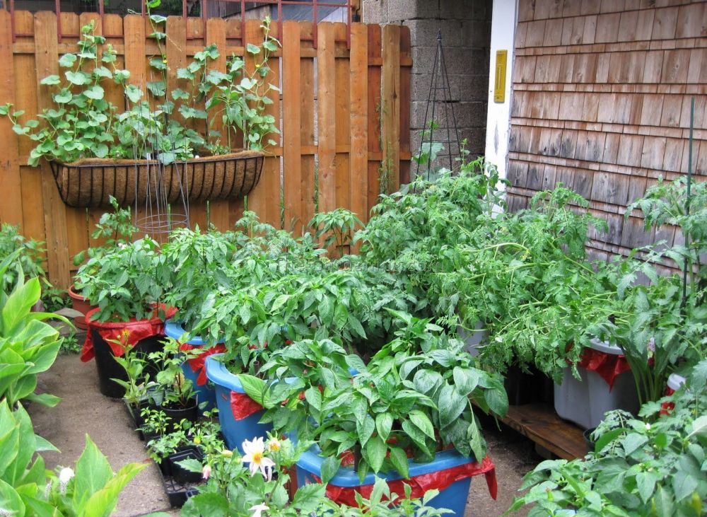
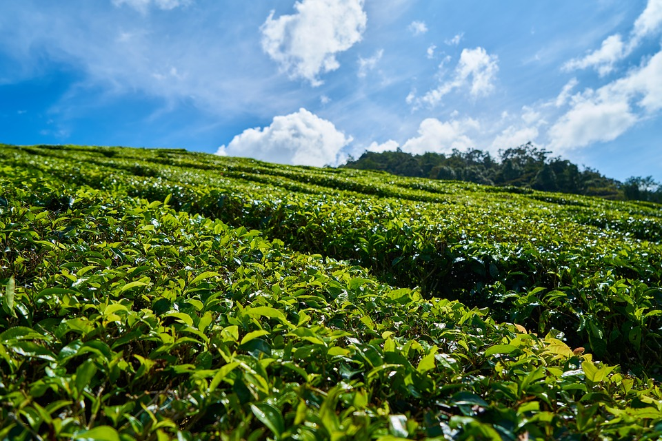
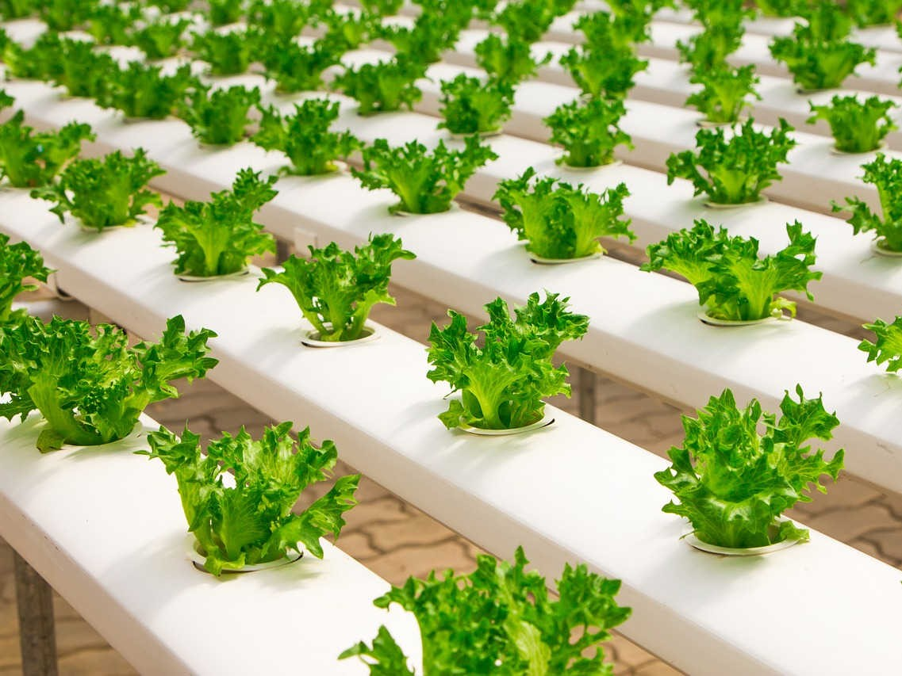
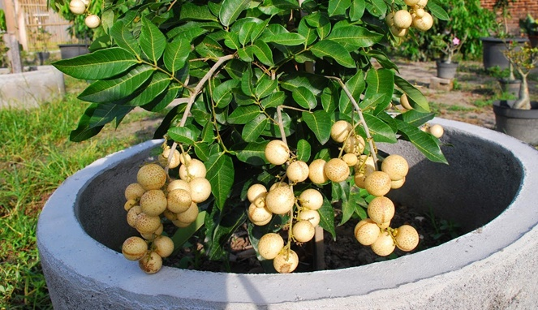
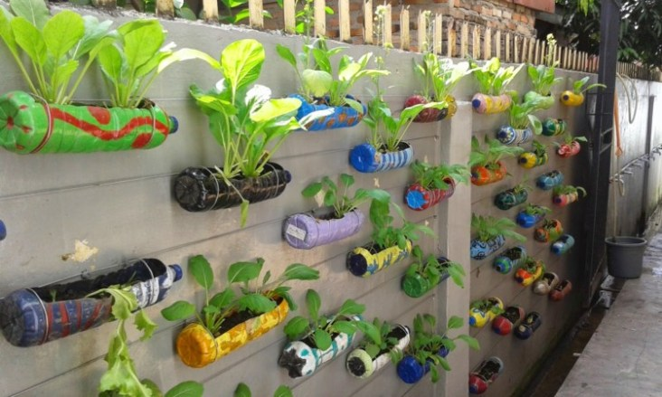

Definisi

Kebun dalam pengertian di Indonesia adalah sebidang lahan, biasanya di tempat terbuka,
yang mendapat perlakuan tertentu oleh manusia, khususnya sebagai tempat tumbuh tanaman.
Pengertian kebun bersifat umum karena lahan yang ditumbuhi tumbuhan secara liar juga dapat disebut kebun,
asalkan berada di wilayah permukiman. Dalam keadaan demikian, kebun dibedakan dari hutan dilihat dari jenis
dan kepadatan tumbuhannya. Dalam ungkapan sehari-hari, kebun sering kali digunakan untuk menyebut perkebunan
(seperti "kebun karet" atau "kebun kelapa") terutama bila ukurannya tidak terlalu luas dan tidak diusahakan
secara intensif komersial. Kata kebun juga dipakai untuk menyebut pekarangan dan taman. Kebun dapat merupakan
suatu pekarangan, tetapi tidak selalu demikian. Keseluruhan atau sebagian kebun dapat ditata menjadi taman.
Kebun dapat dipadankan secara baik dengan orchard dalam bahasa Inggris. Kebun dengan pengertian demikian
adalah suatu usaha pertanaman pohon atau semak secara monokultur, tetapi bukan terna, untuk menghasilkan
bahan pangan. Lahan bagi kebun demikian ini telah dikenal sejak dulu, seperti kebun pala di Maluku dan
berbagai kebun buah-buahan di berbagai tempat di Nusantara (seperti kebun durian, duku, rambutan, dan salak).
Kebun dalam pengertian di Indonesia biasanya tidak memiliki sistem budidaya yang intensif dan sekadar menjadi
tempat untuk menumbuhkan tanaman serta pengumpulan hasil panen. Tidak ada fasilitas penyortiran atau
pengemasan yang tersedia di lahan tersebut. Di luar negeri, kebun apel, jeruk, pisang, dan zaitun diusahakan
secara intensif dan dapat dikatakan sebagai perkebunan.
Jenis-Jenis Kebun
Berdasarkan luasnya, kebun dapat dibedakan menjadi tiga:
1. Kebun Pekarangan

Kebun jenis ini adalah kebun yang dibuat di halaman rumah penduduk, sehingga luasnya kecil.
Biasanya masyarakat memanfaatkan lahan kosong yang ada di halaman rumah mereka untuk ditanami
tanaman-tanaman yang dapat menghasilkan pangan seperti buah-buahan, sayur-sayuran, dan yang
lainnya. Terkadang juga kebun di pekarangan dibuat dengan metode hidroponik.
2. Kebun Ukuran Sedang

Kebun ukuran sedang atau yang biasa kita kenal dengan sebutan kebun saja. Adalah lahan kosong
yang dimiliki oleh warga yang areanya cukup luas untuk ditanami tanaman-tanaman tertentu untuk
dijual hasilnya. Kebun jenis ini pada umumnya dijadikan mata pencaharian oleh masyarakat. Jenis
tanaman yang ditanam bervariasi, bisa berupa tanaman pangan seperti jagung, ubi, sayur-sayuraan
dan buah-buahan seperti jeruk dan yang lainnya atau juga dapat berupa tanaman yang menjadi bahan
baku atau bumbu masakan seperti merica, cabe, jahe, dan rempah-rempah lainnya.
3. Perkebunan

Kebun jenis ini merupakan kebun yang paling luas dari jenis-jenis kebun yang telah disebutkan
sebelumnya. Perkebunan memiliki area yang sangat luas bahkan dapat mencapai puluhan hektar
atau lebih. Biasanya perkebunan dimiliki oleh perusahaan atau pebisnis besar. Contoh dari perkebunan
adalah perkebunan kelapa sawit, perkebunan teh, perkebunan kopi, perkebunan karet, perkebunan tebu,
perkebunan kapas, perkebunan cokelat dan lain-lain. Karena area perkebunan sangat luas, maka hasil
panennya pun sangat besar, dan bahkan banyak yang diekspor ke negara lain.
Teknik-Teknik Menanam
1. Teknik Hidroponik

Hidroponik adalah cara bertanam yang lebih memanfaatkan air ketimbang tanah.
Salah satu caranya adalah dengan cara memanfaatkan pipa air. Bagian terpenting yang
harus diperhatikan dalam membuat hidroponik adalah suhu, nutrisi untuk tanaman, dan
intensitas cahaya.
Dalam penanaman dengan hidroponik, bisa menggunakan lahan seluas 1×2 meter yang bisa
menampung sekitar 20-25 tanaman. Hidroponik sendiri memiliki konsep utama yaitu
mengganti unsur hara yang biasa didapat tanaman dari tanah dengan memberikan nutrisi
buatan pada air yang digunakan sebagai media tanam dalam hidroponik. Oleh karena itu,
perawatan hidroponik pun memerlukan ketekunan.
2. Teknik Tabulampot (Tanam Buah dalam Pot)

Teknik tabulampot adalah teknologi budidaya tanaman dalam lahan pertanian
dengan memanfaatkan ruangan yang terbatas untuk menumbuhkan tanaman yang produktif
di dalam pot. Teknik menanam ini menggunakan media tanam seperti pot berbahan tanah
liat dan kayu dengan menggunakan campuran antara tanah, kompos dan sekam dengan
komposisi 1:1:1.
Dalam fungsinya, tabulampot banyak membantu para pecinta tanaman yang tidak memiliki
lahan/halaman yang luas. Disamping itu, metode ini menjadi pemecah kebuntuan dimana
orang-orang cenderung bosan merawat tanaman hias yang pada pelaksanaaan sehari-harinya
hanya berujung pada pembentukan bunga atau pembentukan fisik tanaman. Pada tabulampot,
perkembangan fisik tanaman seperti batang tidak seberapa diperlukan, karena tanaman buah
ini memang ditujukan untuk ditanam didalam pot yang cenderung kecil dan perkembangan
fisiknya harus dibatasi, sehingga penggunaan pupuk untuk nutrisi juga harus disesuaikan.
3. Teknik Vertikultur

Vertikultur adalah sistem budidaya pertanian atau cara berkebun dengan media tanam yang
dilakukan secara vertikal atau bertingkat, baik indoor ataupun outdoor. Vertikultur
sendiri merupakan gabungan dari dua kata, yaitu vertical dan culture. Vertical memiliki
arti berdiri, sedangkan culture artinya budaya. Kedua kata ini berasal dari bahasa Inggris.
Manfaat vertikultur sudah banyak dilirik para pembudidaya tanaman. Karena pola budidayanya yakni
tanaman disusun dengan cara bertingkat sehingga Anda tak memerlukan tanah yang luas untuk mulai
menanam. Selain itu, karena semua tanaman tumbuh di dalam sebuah pot atau botol bekas, tentunya
kita tak akan mengalami kesulitan ketika memindahkannya.